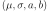

KernelSmoothing¶
-
class
KernelSmoothing(*args)¶ Non parametric fitting technique with kernel smoothing.
Refer to Kernel smoothing.
Parameters: - kernel :
Distribution, optional Univariate distribution of the kernel that will be used. By default, the standard Normal distribution is used.
- bined : bool, optional
Activates bining mecanism only in the univariate or bivariate cases. It allows to speed up the manipulation of the density function of the resulting distribution. By default, the mecanism is activated.
- binNumber : int, , optional
Indicates the number of bins used by the bining mecanism. By default, OpenTURNS uses the values stored in the ResourceMap.
- boundaryCorrection : bool, optional
Activates the boundary correction using the mirroring technique. By default, the correction is not provided.
Notes
The bining mecanism creates a regular grid of binNumber intervals: all the data falling in the same interval are regrouped and replaced by the central point of the interval, weighted by the number of data within the interval.
When applied to multivariate samples, the kernel is the kernel product of the univariate distribution specified in the constructor.
Examples
Fit a distribution on data thanks to the kernel smoothing technique:
>>> import openturns as ot >>> sample = ot.Gamma(6.0, 1.0).getSample(100) >>> kernel = ot.KernelSmoothing() >>> fittedDist = kernel.build(sample)
Compare the PDFs:
>>> graph = fittedDist.drawPDF() >>> graph.add( ot.Gamma(6.0, 1.0).drawPDF()) >>> graph.setColors(['blue', 'red']) >>> graph.setLegends(['KS dist', 'Gamma'])
Methods
build(*args)Fit a kernel smoothing distribution on data. buildEstimator(*args)Build the distribution and the parameter distribution. computeMixedBandwidth(sample)Compute the bandwith according to a mixed rule. computePluginBandwidth(sample)Compute the bandwith according to the plugin rule. computeSilvermanBandwidth(sample)Compute the bandwith according to the Silverman rule. getBandwidth()Accessor to the bandwith used in the kernel smoothing. getBootstrapSize()Accessor to the bootstrap size. getClassName()Accessor to the object’s name. getId()Accessor to the object’s id. getKernel()Accessor to kernel used in the kernel smoothing. getName()Accessor to the object’s name. getShadowedId()Accessor to the object’s shadowed id. getVisibility()Accessor to the object’s visibility state. hasName()Test if the object is named. hasVisibleName()Test if the object has a distinguishable name. setBootstrapSize(bootstrapSize)Accessor to the bootstrap size. setBoundaryCorrection(boundaryCorrection)Accessor to the boundary correction flag. setName(name)Accessor to the object’s name. setShadowedId(id)Accessor to the object’s shadowed id. setVisibility(visible)Accessor to the object’s visibility state. -
__init__(*args)¶ Initialize self. See help(type(self)) for accurate signature.
-
build(*args)¶ Fit a kernel smoothing distribution on data.
Parameters: - sample : 2-d sequence of float
Data on which the distribution is fitted. Any dimension.
- bandwidth :
Point, optional Contains the bandwith in each direction. If not specified, the bandwith is calculated using the mixed rule from data.
Returns: - fittdDist :
Distribution The fitted distribution.
Notes
According to the dimension of the data and the specified treatments, the type of the resulting distribution differs:
In dimension 1:
- if only the bining mecanism is activated, a
Mixtureis produced (all the weights differ). - if only the boundary correction is activated, a
TruncatedDistributionis produced: the truncation of aKernelMixture(all the weights are identical). - if the bining mecanism and the boundary correction is activated, a
TruncatedDistributionis produced: the truncation of aMixture(all the weights differ).
- if only the bining mecanism is activated, a
Examples
See the effect of the boundary correction:
>>> import openturns as ot >>> sample = ot.Exponential(1.0).getSample(1000) >>> smoother = ot.KernelSmoothing() >>> fittedDistNoCorr = smoother.build(sample) >>> smoother.setBoundaryCorrection(True) >>> fittedDistWithCorr = smoother.build(sample)
Compare the PDFs:
>>> graph = ot.Exponential(1.0).drawPDF() >>> graph.add(fittedDistNoCorr.drawPDF()) >>> graph.add(fittedDistWithCorr.drawPDF()) >>> graph.setColors(['black', 'blue', 'red']) >>> graph.setLegends(['Exp dist', 'No boundary corr', 'Boundary corr'])
-
buildEstimator(*args)¶ Build the distribution and the parameter distribution.
Parameters: - sample : 2-d sequence of float
Sample from which the distribution parameters are estimated.
- parameters :
DistributionParameters Optional, the parametrization.
Returns: - resDist :
DistributionFactoryResult The results.
Notes
According to the way the native parameters of the distribution are estimated, the parameters distribution differs:
- Moments method: the asymptotic parameters distribution is normal and estimated by Bootstrap on the initial data;
- Maximum likelihood method with a regular model: the asymptotic parameters distribution is normal and its covariance matrix is the inverse Fisher information matrix;
- Other methods: the asymptotic parameters distribution is estimated by Bootstrap on the initial data and kernel fitting (see
KernelSmoothing).
If another set of parameters is specified, the native parameters distribution is first estimated and the new distribution is determined from it:
- if the native parameters distribution is normal and the transformation regular at the estimated parameters values: the asymptotic parameters distribution is normal and its covariance matrix determined from the inverse Fisher information matrix of the native parameters and the transformation;
- in the other cases, the asymptotic parameters distribution is estimated by Bootstrap on the initial data and kernel fitting.
Examples
Create a sample from a Beta distribution:
>>> import openturns as ot >>> sample = ot.Beta().getSample(10) >>> ot.ResourceMap.SetAsUnsignedInteger('DistributionFactory-DefaultBootstrapSize', 100)
Fit a Beta distribution in the native parameters and create a
DistributionFactory:>>> fittedRes = ot.BetaFactory().buildEstimator(sample)
Fit a Beta distribution in the alternative parametrization :
>>> fittedRes2 = ot.BetaFactory().buildEstimator(sample, ot.BetaMuSigma())
-
computeMixedBandwidth(sample)¶ Compute the bandwith according to a mixed rule.
Returns: - bandwidth :
Point Bandwith wich components are evaluated according to a mixed rule.
Notes
Simply use the plugin rule for small sample, and estimate the ratio between the plugin rule and the Silverman rule on a small sample, then scale the Silverman bandwidth computed on the full sample with this ratio.
- bandwidth :
-
computePluginBandwidth(sample)¶ Compute the bandwith according to the plugin rule.
Returns: - bandwidth :
Point Bandwith wich components are evaluated according to the plugin rule.
Notes
Warning! It can take a lot of time for large samples, as the cost is quadratic with the sample size.
- bandwidth :
-
computeSilvermanBandwidth(sample)¶ Compute the bandwith according to the Silverman rule.
Returns: - bandwidth :
Point Bandwith wich components are evaluated according to the Silverman rule supposing a normal distribution. The bandwith is based on the evaluation of the interquartiles rather than the standard deviation of the distribution and the sample.
- bandwidth :
-
getBandwidth()¶ Accessor to the bandwith used in the kernel smoothing.
Returns: - bandwidth :
Point Bandwith used in each direction.
- bandwidth :
-
getBootstrapSize()¶ Accessor to the bootstrap size.
Returns: - size : integer
Size of the bootstrap.
-
getClassName()¶ Accessor to the object’s name.
Returns: - class_name : str
The object class name (object.__class__.__name__).
-
getId()¶ Accessor to the object’s id.
Returns: - id : int
Internal unique identifier.
-
getKernel()¶ Accessor to kernel used in the kernel smoothing.
Returns: - kernel :
Distribution Univariate distribution used to build the kernel.
- kernel :
-
getName()¶ Accessor to the object’s name.
Returns: - name : str
The name of the object.
-
getShadowedId()¶ Accessor to the object’s shadowed id.
Returns: - id : int
Internal unique identifier.
-
getVisibility()¶ Accessor to the object’s visibility state.
Returns: - visible : bool
Visibility flag.
-
hasName()¶ Test if the object is named.
Returns: - hasName : bool
True if the name is not empty.
-
hasVisibleName()¶ Test if the object has a distinguishable name.
Returns: - hasVisibleName : bool
True if the name is not empty and not the default one.
-
setBootstrapSize(bootstrapSize)¶ Accessor to the bootstrap size.
Parameters: - size : integer
Size of the bootstrap.
-
setBoundaryCorrection(boundaryCorrection)¶ Accessor to the boundary correction flag.
Parameters: - boundaryCorrection : bool
Activates the boundary correction using the mirroring technique.
-
setName(name)¶ Accessor to the object’s name.
Parameters: - name : str
The name of the object.
-
setShadowedId(id)¶ Accessor to the object’s shadowed id.
Parameters: - id : int
Internal unique identifier.
-
setVisibility(visible)¶ Accessor to the object’s visibility state.
Parameters: - visible : bool
Visibility flag.
- kernel :